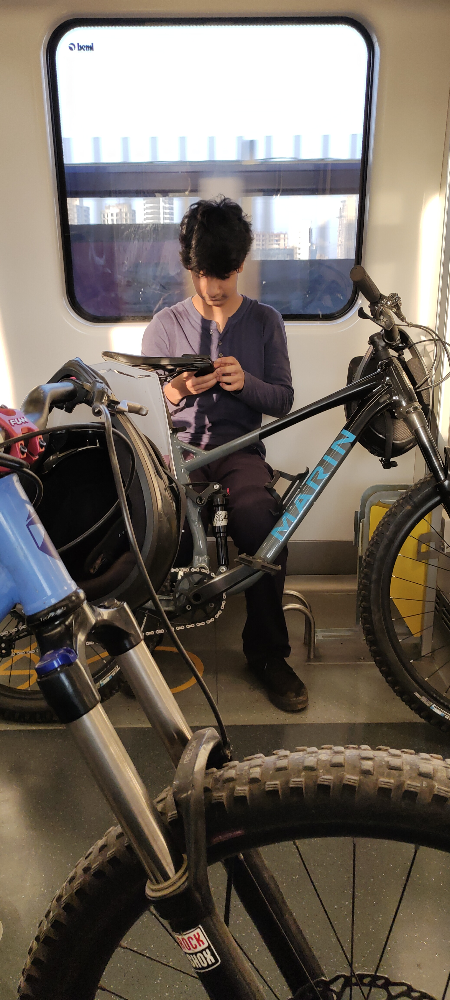

2022-11-16
I woke up at 5 am, one hour earlier than I would ride at this spot because Kashish, who spent the night at Siddha’s, was coming to ride along with Siddha. I reached the meeting spot at 7:15. Prajwal reached at 7:30, despite leaving from Kurla at 7. He drove at 80kmph to reach on time. Kashish and Siddha reached 8. This was one hour late. This made me curse Siddha and hurry on the way up, where we found many runners going down the hill. I reached the top only to find a group of elderly trekkers having tea. I was initially concerned, thinking it was a jhund of forest officers. However, I soon realized that they were civilians having a good time. We spoke to them. In time, Kashish reached up, due to his unfamiliarity with the price that one has to pay to ride DH in Mumbai: Long Climbs.

After wearing all our gear, we started our ride down the hill. I stopped many times to clear out rocks on the trail. This broke the flow, which is the main USP of the trail we were riding - it is called “Flow Trail”. This resulted in Kashish later telling me he thought that the first trail we rode was a waste of time. We did ride the ending section of the trail that we usually do not in fear of forest authorities, but it was completely empty, and pumping the trail resulted in 60kmph. It was refreshing. I know to ride that section often, and there hasn’t been anyone there to date.On the way up, I cleared a lot of the trail. A bunch of plants and branches resulted in scars on our arms or plain going off-track due to greenery covering the trail. On the way down the Temple Trail, I stopped a lot to wait for Kashish and Prajwal, who were considerably slower, mainly by virtue of riding hardtails - the trail is gnarly. I am talking BIG boulders we have to meander our way through. Siddha went slower and showed Kashish and Prajwal the good lines. For that, I am grateful to him. He is like Slade in the manner that he loves social riding - I only do if I have people around me that I can learn from and do not slow me down. Usually, if I have people riding with me, they’re new to MTB and therefore operational drag. But that is something I’m willing to deal with due to the long-run return of having like-minded people around me, and how that enables bigger projects in terms of trail building and MTB trips - shared costs and bigger features.
Post ride, Siddha went home, and so did Prajwal, and Kashish went to a store he wanted to visit. I found myself craving the social interaction that usually comes post-ride. That was interesting. That is it. I am writing this after more than a week and have forgotten a lot of what happened on the ride. Lesson learned - write about the ride before you go to the next ride.